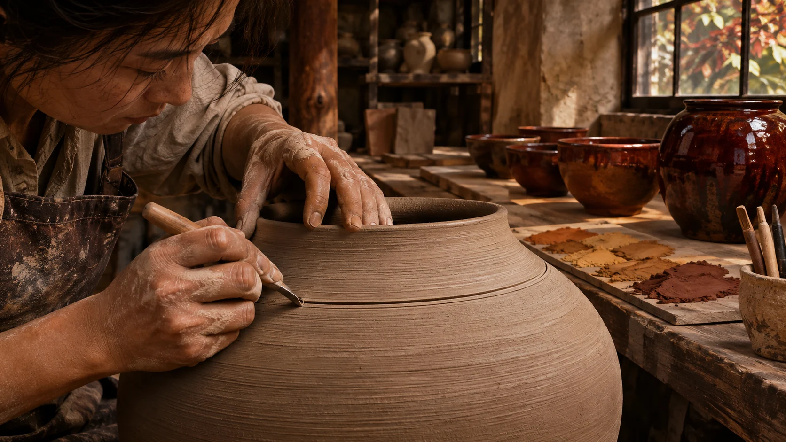
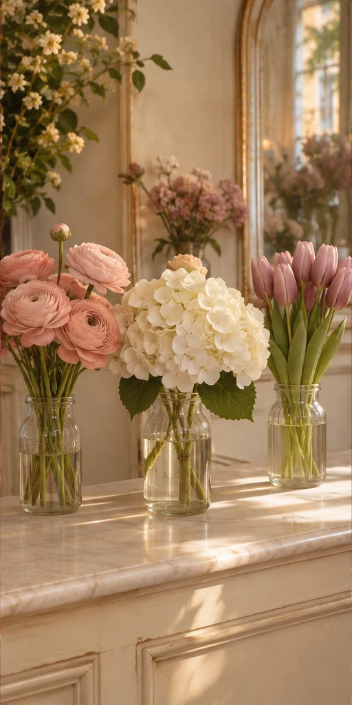
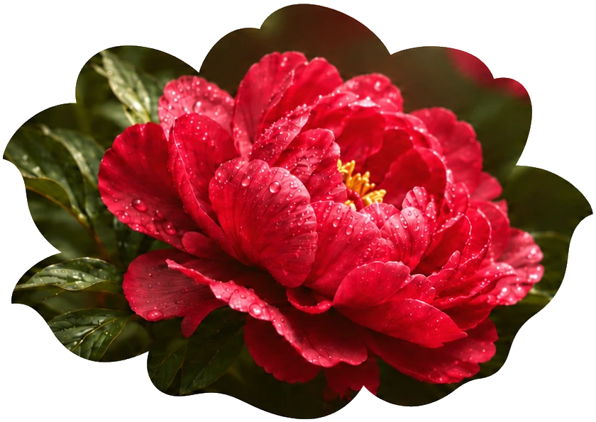

同一个页面，不同的目光
看看这本摊开的书，你先看见了什么？
有人先看见朱红的布面; 纸页底下只露出一圈窄边，那抹红却把整本书托了起来
也有人沿着书脊看下去金线隔一段就钻进纸里，翻开的书页就这样缝在一起
审美为什么会变审美为什么会变
我们对美的感受，并不是一成不变的; 生活的环境、接触的人、使用的工具，以及一个时代流行的表达方式，都会影响我们看待事物的眼光同样是一个网页，初次看到时觉得新鲜的设计，见多了可能会觉得拥挤；曾经觉得普通的留白，也可能在某个时刻让人感到舒适
变化的不只是外部环境，还有我们自己的需求赶时间时，我们希望信息清楚、操作直接；想了解一个品牌或阅读一篇文章时，可能又期待画面有氛围，愿意放慢脚步. 一个设计是否让人觉得美，往往和它出现在哪里、面对谁、帮助人做什么有关
所以，审美不是给每个页面套用同一套固定的颜色或风格. 它需要不断观察：人们身处怎样的情境，正在寻找什么，又会被什么细节打动. 技术可以帮助我们尝试更多可能，而人的感受与选择，会让这些可能逐渐找到属于自己的方向

为什么 AI 页面容易雷同
只告诉 AI「做得好看一点」，它就容易沿用熟悉的排法. 看看下面三张首页：换了照片，还有哪里变了？
Taste Studio 怎样工作
先说清访客的任务，再把你的选择做出来

01 / 从一个具体任务开始
下班路上，带一束花回家
附近的顾客第一次打开首页, 他想先看看今天有什么花，再决定去哪里、什么时候取
- 谁会来
- 想顺路买花的附近顾客
- 要做什么
- 挑一束喜欢的花, 找到取花信息
- 怎样算做好
- 在手机上看清花、选好花，顺利找到取花入口
Taste Studio 怎样设计页面
把草图拆成图片、文字、按钮与布局, 保留打动你的细节，也让每一次操作有回应
点选设计细节
金圈会标出它在成品里的位置
今日的花
红色洋牡丹
层层花瓣，带着清晨的水珠
当前选择：红色洋牡丹
点一个元素，看它在页面里的位置；也可以直接换一束花
花店交互示例 · 切换花束，主图、名称与介绍一起更新；不提供购买或预约
你在意的细节，怎样被记下来怎样记录你的偏好
